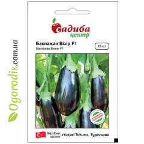
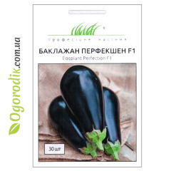
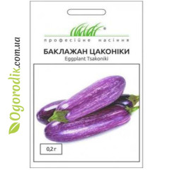
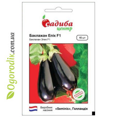
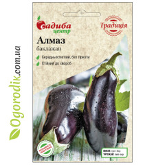

Biji Terongа
Katalog

Terong F1

Terong F2

Terong F3

Terong F4

Terong F5

Terong F6
Benih terong dapat ditanam langsung di tanah atau bibit yang ditanam. Toko kami memiliki berbagai pilihan benih terong, yang akan menarik minat setiap tukang kebun.
Terong paling baik ditanam dengan biji di tanah ketika panas berlalu, karena mereka adalah salah satu tanaman nightshade yang paling ringan dan panas.
Tidak disarankan menanamnya di tempat kentang, tomat, dan paprika sebelumnya tumbuh.